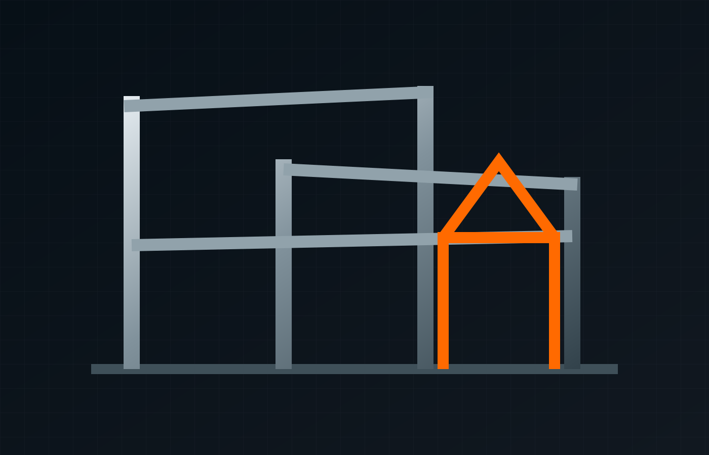
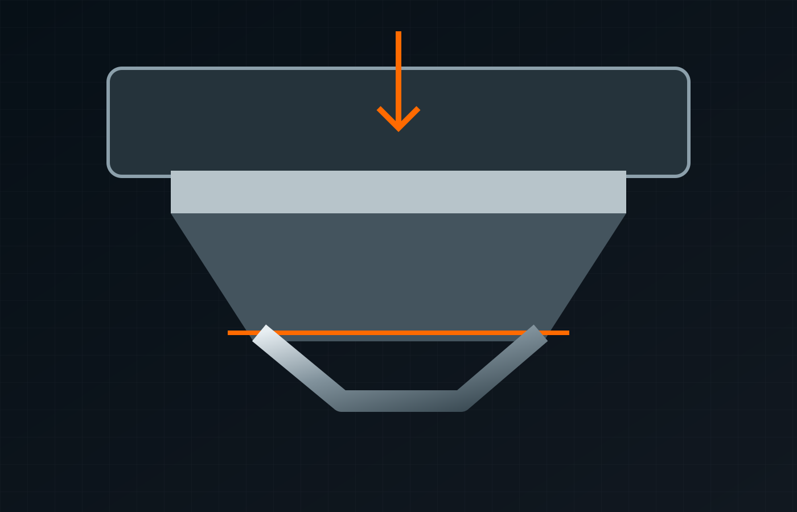

PRECISION
ENGINEERED IN SHEFFIELD.
Advanced laser cutting, industrial screen manufacture, CNC bending, welding and bespoke metal fabrication — delivered from Sheffield for demanding industrial applications.
Integrated metalwork. One experienced partner.
From repeat industrial components to highly bespoke architectural projects, Parkway Fabrications covers a broad range of cutting, forming, welding and made-to-order manufacturing requirements.
Granulator & shredder screens
Extended-life standard and custom screens for recycling, agriculture, manufacturing and material-processing equipment.

Perforated sheet metal
Strong, durable perforated metal for infill panels, tread plate, balustrades, ventilation, recycling screens and more.
6kW fibre laser cutting
High-accuracy profiling using an advanced 6kW fibre laser with a 3m interchangeable bed.

Custom fabrication
Architectural metalwork, structural elements, staircases, rails, gates, shelters, cages and specialist components.

Bending & folding
4m 200t Edwards Pearson CNC press brake capability with experienced operators and extensive tooling.

MIG, TIG & bespoke welding
Fabrication and welding across mild steel, stainless steel, aluminium and other materials for varied sectors.
Sheffield manufacturing.
Built for industry.
Parkway Fabrications presents itself as a manufacturing partner for UK and international projects, combining state-of-the-art machinery, made-to-order production, OEM capability and industry expertise.
About Parkway →Modern laser cutting and CNC bending equipment supporting precision and repeatability.
Replacement and custom components built around machine specifications and customer requirements.
From custom industrial screens to architectural metalwork and specialist fabricated components.
Manufacturing in Sheffield with capability to support customers beyond South Yorkshire and the UK.
Send the drawing. Send the specification. Start the conversation.
From steel fabrication in Sheffield to precision laser cutting and industrial screens, the next project starts with the details.